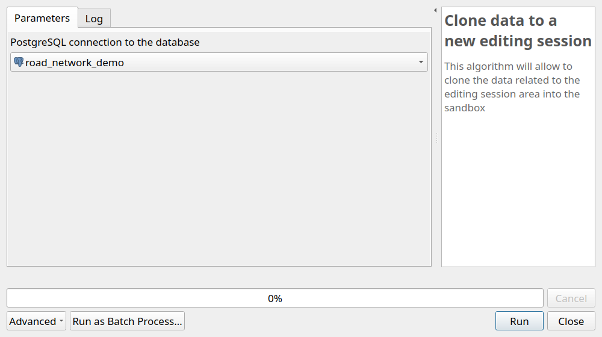
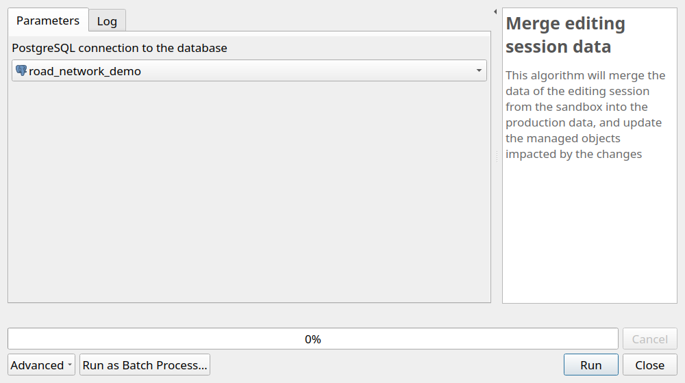
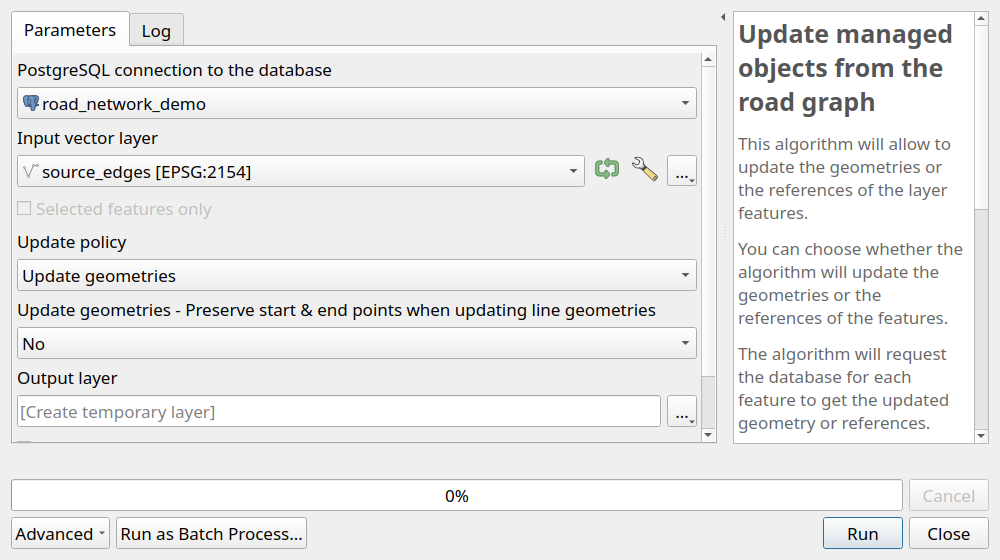
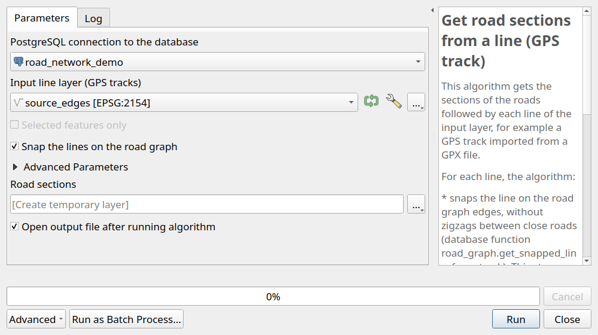

Algorithmes de traitement#
Le plugin ajoute le fournisseur RoadNetwork à la Boîte à outils de traitements de QGIS (menu Traitement / Boîte à outils).
La plupart des algorithmes sont aussi disponibles avec les boutons de la barre d'outils et des panneaux.
| Groupe | Algorithme | Utilisation |
|---|---|---|
| Configuration | Configurer le plugin | Choisir la connexion PostgreSQL du projet |
| Structure | Créer la structure de la base de données | Installer le schéma road_graph dans la base de données |
| Structure | Mettre à jour la structure de la base de données | Mettre à jour le schéma après une mise à jour du plugin |
| Administration | Créer le projet d'administration | Créer le projet QGIS d'administration |
| Édition | Import des données à partir de gabarits | Remplir un graphe routier vide à partir de couches de tronçons et de bornes |
| Édition | Copier les données vers le bac-à-sable d'édition | Copier les données de l'emprise d'une session d'édition dans le bac-à-sable |
| Édition | Fusionner les données du bac-à-sable | Fusionner les données du bac-à-sable dans les données de production |
| Édition | Mettre à jour les objets à partir du graphe routier | Calculer les références à partir des géométries, ou les géométries à partir des références, d'une couche |
| Référencement linéaire | Sections de routes suivies par une ligne (trace GPS) | Obtenir les sections des routes suivies par des lignes, par exemple des traces GPS |
Tous les algorithmes ont un paramètre Connexion à la base PostgreSQL :
par défaut, la connexion choisie avec l'algorithme Configurer le plugin.
Configuration#
Configurer le plugin#
Choisissez la connexion PostgreSQL utilisée par le projet QGIS actuel. Cet algorithme doit être lancé avant les autres. Voir Configurer le plugin.
Structure#
Créer la structure de la base de données#
Installe le schéma road_graph, avec ses tables, vues et fonctions, ainsi que le schéma d'édition road_graph_editing.
Voir Créer la structure de la base de données.
Mettre à jour la structure de la base de données#
Met à jour la structure de la base de données vers la version du plugin, après une mise à jour du plugin. Le panneau d'administration indique si une mise à jour est nécessaire. Voir Mettre à jour la structure de la base de données.
Administration#
Créer le projet d'administration#
Crée un projet QGIS d'administration avec toutes les couches, styles, étiquettes et actions. Voir Créer le projet d'administration et Projet d'administration.
Édition#
Import des données à partir de gabarits#
Remplit un graphe routier vide à partir d'une couche de tronçons et d'une couche de bornes. Les routes, nœuds, tronçons et bornes sont créés, et les références des tronçons sont calculées. Voir Importer le graphe routier.
Copier les données vers le bac-à-sable d'édition#
Copie les données de production situées dans le dernier polygone de session d'édition au statut created
dans le schéma d'édition road_graph_editing, le bac-à-sable. Le statut de la session devient cloned.
Aussi disponible avec le bouton Copier les données vers le bac-à-sable d'édition de la barre d'outils
et avec l'action Create editing session de la couche editing_sessions.
L'algorithme refuse de se lancer si :
- la couche
editing_sessionsest en mode édition : enregistrez les modifications et quittez le mode édition au préalable, - une session d'édition au statut
editedn'a pas encore été fusionnée ou supprimée, - il n'y a aucune session d'édition au statut
created: dessinez au préalable le polygone de la session d'édition.

Voir Édition du graphe routier.
Fusionner les données du bac-à-sable#
Fusionne les données de la session d'édition au statut edited dans le schéma de production road_graph,
met à jour les objets gérés impactés par les modifications,
puis vide le bac-à-sable et supprime la session d'édition fusionnée.
Aussi disponible avec le bouton Fusionner les données du bac-à-sable de la barre d'outils.
L'algorithme refuse de se lancer si la couche editing_sessions est introuvable ou en mode édition,
ou s'il n'y a aucune session d'édition au statut edited.

Voir Édition du graphe routier.
Mettre à jour les objets à partir du graphe routier#
Met à jour les références ou les géométries des entités d'une couche vecteur à partir du graphe routier. La couche peut être une table PostgreSQL de la base de données, ou toute autre couche vecteur, par exemple une couche GeoPackage.
Paramètres :
Couche vecteur: une couche de points ou de (multi)lignes,Méthode de modification:Modifier les références: les références de chaque entité sont calculées à partir de sa géométrie,Modifier les géométries: la géométrie de chaque entité est calculée à partir de ses références,
Mise à jour des géométries - Préserver le point de départ et d'arrivée:NonouOui. Utilisé uniquement pour mettre à jour les géométries d'une couche de lignes :Non: la géométrie est calculée à partir des références enregistrées,Oui: les références sont d'abord calculées à partir des points de début et de fin de la ligne, puis la géométrie est calculée à partir de celles-ci. La ligne conserve ses points de début et de fin, et suit la route entre les deux. Utilisez cette option quand les points de début et de fin sont corrects mais que les références sont obsolètes ou que la ligne ne suit pas la route,
Couche de sortie: la couche créée avec les entités mises à jour.

La couche en entrée doit avoir les champs de références correspondant à son type de géométrie :
- couches de points :
road_code,marker_code,abscissa, et éventuellementoffset,sideetcumulative, - couches de lignes :
road_code,start_marker_code,start_abscissa,end_marker_code,end_abscissa, et éventuellementoffsetetside.
L'algorithme permet la modification sur place de la couche en entrée : sélectionnez la couche, basculez-la en mode édition,
puis utilisez le bouton Edit Features In-Place de la boîte à outils de traitements.
Les entités sont alors mises à jour directement dans la couche, et les modifications peuvent être vérifiées avant de les enregistrer.
Pour les tables enregistrées dans la couche managed_objects, les mêmes mises à jour peuvent être faites en SQL,
voir Calculer les références.
Elles sont aussi faites automatiquement lors de la fusion d'une session d'édition, voir Règles de mise à jour.
Référencement linéaire#
Sections de routes suivies par une ligne (trace GPS)#
Obtient les sections des routes suivies par chaque ligne d'une couche, par exemple des traces GPS importées de fichiers GPX, avec les références de début et de fin sur chaque route.
Pour chaque ligne, l'algorithme :
- accroche la ligne sur les tronçons du graphe routier, sans zigzags entre des routes proches,
avec la fonction de base de données
road_graph.get_snapped_line_from_track, - obtient la liste ordonnée des routes suivies par la ligne accrochée, avec la fonction de base de données
road_graph.get_road_sections_from_snapped_line.
Voir Traces GPS pour le détail de ces fonctions.
Paramètres :
Couche de lignes en entrée (traces GPS): une couche de lignes ou de multilignes, dans n'importe quel système de coordonnées. Pour un fichier GPX, ouvrez sa couchetracks,Accrocher les lignes sur le graphe routier: coché par défaut. Décochez-le uniquement si les lignes suivent déjà les tronçons du graphe routier, par exemple le résultat d'un accrochage précédent,- paramètres avancés, utilisés pour accrocher les lignes :
Distance entre les points ajoutés à la ligne (m):2par défaut,Distance maximale entre la ligne et les routes (m):25par défaut. Les points de la ligne plus éloignés de toute route sont ignorés,Pénalité appliquée à chaque changement de route:100par défaut. Augmentez-la si le résultat a encore des zigzags entre des routes proches,
- paramètre avancé
Distance maximale entre la ligne accrochée et les tronçons (m):1par défaut, Sections de routes: la couche de sortie.

La couche de sortie contient une entité par section de route, dans le système de coordonnées du graphe routier. Sa géométrie est la partie de la ligne accrochée sur cette route, et ses champs sont les champs de la ligne en entrée, suivis de :
| Champ | Description |
|---|---|
road_order |
Ordre de la section le long de la ligne, à partir de 1 |
road_code |
Code de la route |
start_marker, start_abscissa |
Références du début de la section, par ex. 14 et 905.27 pour PR 14 + 905.27 m |
start_cumulative |
Cumul depuis le début de la route jusqu'au début de la section |
end_marker, end_abscissa |
Références de la fin de la section |
end_cumulative |
Cumul depuis le début de la route jusqu'à la fin de la section |
direction |
downstream si la ligne suit le sens de la route, upstream sinon |
length |
Longueur de la section en mètres |
Si un champ de la couche en entrée a le même nom que l'un de ces champs, par exemple road_code,
le champ de la section est renommé avec un suffixe, par ex. road_code_2.